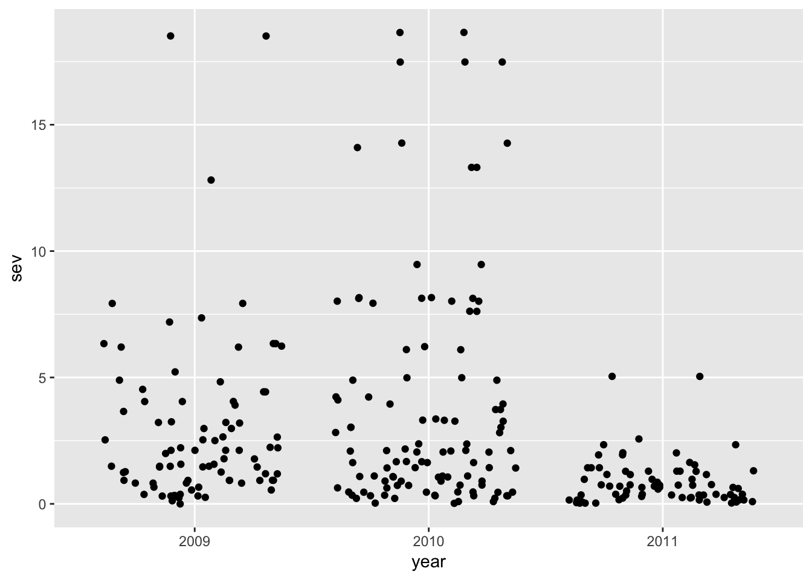
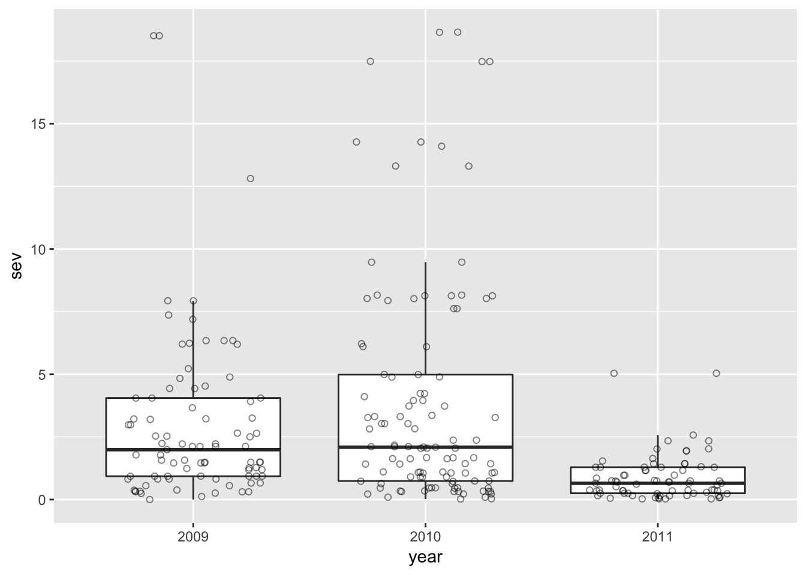

Capítulo 3 Visualização de dados
Na análise de dados, a visualização é uma etapa fundamental que permite ao pesquisador aprender sobre o conjunto de dados. A observação de dados em tabela não é muito informativa e pouco se pode aprender acerca de padrões, tendências e associações entre variáveis. É “enxergando” os dados que o pesquisador vai decidir sobre a necessidade de transformar, criar novas variáveis, e definir os modelos estatísticos a serem usados para testar as hipóteses.
A visualização por meio de gráficos deve ser iniciada na fase de exploração e sumarização dos dados embora, de maneira geral, a idéia geral é que os gráficos são apenas necessários na etapa de comunicação dos resultados. São dois contextos diferentes em que se usam os procedimentos gráficos.
Na etapa de visualização, o gráfico deve ser feito rapidamente e de maneira simples, utilizando tipos de gráficos apropriados para responder a uma determinada pergunta. O gráfico serve apenas para dar o subsídio necessário ao pesquisador para as decisões posteriores. Não é necessário que os gráficos sejam muito elaborados, com muitos detalhes (com títulos de eixos, legendas, etc.). Eles estão longe de serem os gráficos que serão apresentados em um publicação. Esses últimos exigirão um bom tempo do pesquisador para elaborar um bom gráfico para uma comunicação efetiva. Voltaremos nesse assunto mais para frente no capítulo sobre comunicação dos resultados.
Neste capítulo, os dados servão visualizados no R utilizando-se o pacote ggplot2 que é considerado o “estado da arte” em visualização de dados no R ver página do ggplot2. Tradicionalmente, gráficos em R são elaboradores com funções do pacote Graphics que é nativo do R base, o qual foi desenvolvido e mantido pelo “R Core Team” e colaboradores ao redor do mundo. As funções de gráficos do R base tem uma sintaxe diferente do ggplot2 e não serão abordados nesse capítulo.
3.1 Dados de levantamento
A partir de agora, iremos visualizar os dados do levantamento e identificação de isolados de fungos do complexo de espécie Fusarium gramineraum obtidos de lavouras de trigo do sul do Brasil Del Ponte et al., 2015 que trabalhamos nos capítulos anteriores. O conjunto já está em formato “arrumado”(tradução para “tidy”) onde cada linha do data frame é um isolado e cada coluna é uma variável, no caso um metadado associado com cada isolado.
Na sequencia, vamos carregar esse conjunto de dados e selecionar apenas os isolados obtidos no Estado do Rio Grande do Sul por meio da função filter do pacote dplyr e atribuir ao data frame survey_rs. Após carregar os dados, é importante observar todas as variáveis do conjunto, o que nos dará ideia das perguntas acerca do conjunto de dados que serão feitas durante a visualização e assim elaborar as hipóteses a serem verificadas.
library(readr)
survey2 <- read_csv ("data/survey2.csv")
library(dplyr)
survey_rs <- filter(survey2, state == "RS")3.2 Construindo um gráfico
Um gráfico ggplot2 é feito com pelo menos duas funções. A primeira, ggplot, permite criar um sistema de coordenada do gráfico. Nela, o primeiro argumento esperado (o que vai entre parênteses) é o nome do conjunto de dados. Ao executar a função ggplot note que aparecerá um gráfico “vazio” para o conjunto survey_rs.
library(ggplot2)
ggplot(survey_rs)
Na sequencia, deve ser informado um tipo de objeto geométrico (“geoms”) na forma de uma camada (layer) no gráfico. No contexto do conjunto de dados de trabalho, vamos responder à seguinte pergunta: O número de isolados em amostrados foi igual em cada um dos anos do levantamento? (lembrando que ano é uma variável categórica).
3.3 Dados categóricos
No ggplot2 após entrar com a função ggplot, novas funções são adicionadas após o sinal positivo (+). O “geom” que iremos usar é o geom_bar, indicado para representar o número total de observações geral ou segundo alguma condição - um outra variável categórica.
Seguindo com a construção de nosso gráfico no ggplot2 com dados condicionados por categorias de uma variável (no caso os níveis da variável “year”), essas são infomadas no atributo de estética aes que pode ser informado tanto na função ggplot ou na função geom_bar. O primeiro caso é a forma mais utilizada já que condiciona toda as outras camadas que poderão ser adicionadas no gráfico.
Na função geom_bar, como padrão, os dados apresentados são o somatório do número de linhas (isolados) em cada ano. Veja abaixo as duas formas de obter o mesmo resultado.
ggplot(survey_rs, aes(year))+
geom_bar(color = "black", fill = "blue")+
theme_light()Podemos ampliar a pergunta sobre quantos isolados em cada ano e em cada campo com determinado resto cultural. Assim, teremos duas informações apresentadas no gráfico o que exigirá uma legenda para auxilizar na interpretação. No ggplot2, a legenda é colocada automaticamente após definir o atributo fill. As cores são definidas automaticamente, sempre em uma mesma ordem, iniciando pelo vermelho, verde, azul, etc.
library(ggthemes)
survey_rs %>%
filter(residue != "potato") %>%
ggplot(aes(year, fill=residue))+
geom_bar(position = "dodge")+
theme_few()+
theme(legend.position = "right")+
#scale_fill_manual(values = c("blue", "yellow"))+
labs(title = "Titulo do gráfico", x = "Ano", y = "Frequencia", fill = "Residue")
Podemos modificar a posição das categorias com os atributos “stack”, “dodge” e “fill”. O padrão do geom_bar é a posição “stack”
ggplot(survey_rs, aes(x= year, fill = species))+
geom_bar()ggplot(survey_rs, aes(x= year, fill = species))+
geom_bar(position = "dodge")ggplot(survey_rs, aes(x= year, fill = species))+
geom_bar(position = "fill")Podemos modificar o sistema de coordenadas para mostrar o número de isolados por espécies em um sistema polar.
ggplot(survey_rs, aes(x= factor(year), fill = species))+
geom_bar()+
coord_polar()Alternativamente, similar a um gráfico de torta ou pizza
ggplot(survey_rs, aes(x= factor(year), fill = species), width = 1)+
geom_bar()+
coord_polar(theta = "y")Exercício
Com base no que foi exposto, elabore gráficos de barras para outras variáveis categóricas respondendo às seguintes perguntas:
O número de isolados foi diferente em campos de trigo com resíduos de soja e milho?
Qual a espécie encontrada em maior frequencia no geral e em cada ano?
Quais os cinco municípios que contribuiram com maior número de isolados?
Qual a espécie encontrada em maior frequencia? Houve variação dessa frequencia entre os anos?
3.4 Dados contínuos
Para dados contínuos, normalmente utilizamos histogramas, dotplots ou boxplots para descrever uma variável contínua isoladamente com outra contínua ou mesmo uma contínua com outra categórica. Gráficos de dispersão de pontos são usados para relacionar duas variáveis contínuas.
No nosso conjunto, podemos perguntar sobre a origem dos isolados. Antes disso, vamos verificar primeiro se há mais um isolado amostrado em cada ponto (campo) usando a função table que irá sumarizar o número de entradas por campo. Vamos colocar os dados no formato de uma data.frame e listar apenas os seis primeiros registros.
head(data.frame(table(survey_rs$field)))## Var1 Freq
## 1 1 9
## 2 2 9
## 3 3 6
## 4 4 11
## 5 5 12
## 6 6 8Nota-se que temos campos que contribuiram com mais de um isolado. Então, para que não tenhamos múltiplos pontos em cada local, iremos selecionar apenas uma observação de cada campo combinando a função unique com a função select e atribuir essa seleção ao conjunto field_rs.
field_rs <- unique(select(survey_rs, c(1:6, 7:9)))
field_rs$year <- as.factor(field_rs$year)
# vamos transformar year que é um variável numérica para factorAgora, podemos fazer um gráfico da relação entre latitude e longitude (duas variáveis contínuas) que permitirá visualizar a localização geográfica dos campos amostrados.
ggplot(field_rs, aes(long, lat))+
geom_point()No gráfico acima, os pontos representam os três anos da amostragem. Podemos usar diferentes marcadores que identificam os diferentes anos.
ggplot(field_rs, aes(long, lat, shape=factor(year)))+
geom_point()Para faciliar ainda mais a identificação dos pontos, podemos usar cores.
ggplot(field_rs, aes(long, lat, shape = factor(year), color = factor(year)))+
geom_point(size=3) # aumentamos um pouco o tamanho do símbolo!Ou então, podemos utilizar a função facet_wrap para criar três gráficos condicionando pelo ano.
ggplot(field_rs, aes(long, lat))+
geom_point(size=3)+
facet_wrap(~year, ncol=1)Uma outra pergunta que poderia ser feita, considerando variáveis contínuas, é sobre a distribuição dos valores de incidência e severidade nos campos visitados. Nesse caso, podemos usar histrogramas. No ggplot2, usamos a função geom_histogram para gerar um histograma da distribuição dos valores de severidade e de incidência. Note que o número de “bins” (categorias) é definido automaticamente.
field_rs %>%
filter(residue != "potato") %>%
ggplot(aes(factor(year), sev))+
geom_boxplot()+
geom_jitter(width=0.2, height=0, alpha=0.4)+
theme_grey()+
facet_wrap(~residue)+
ylim(0,25)+
ggsave("box1.png", width=6, height=3)ggplot(field_rs, aes(x= sev))+
geom_freqpoly()# vamos alterar o número de bins
ggplot(field_rs, aes(x= inc))+
geom_histogram(bins = 10)O histograma é um ótima maneira de mostrar a simetria/assimetria da distribuição. Por exemplo, no caso da severidade, é evidente que há um concentração muito maior de valores abaixo de 2.5% e alguns poucos valores acima de 5%.
Podemos visualizar os mesmos dados sob uma outra perspectiva, que é através do uso de boxplots com a função geom_boxplot. Veja explicação sobre boxplot.
ggplot(field_rs, aes(x = field, y = inc))+ # usamos aqui uma variável contínua no x para um histograma para incidência
geom_boxplot() ggplot(field_rs, aes(x = inc, y = sev))+
geom_boxplot()+
facet_wrap(~year)
Outras formas de visualizar dados contínuos podem ser feitas com os seguintes geoms.
geom_area geom_density geom_dotplot geom_freqpoly
ggplot(field_rs, aes(sev))+
geom_dotplot(method = "histodot", dotsize=0.75)ggplot(field_rs, aes(inc), fill = year)+ geom_dotplot(method = "histodot", dotsize=1)3.5 Contínuos x categóricos
Podemos fazer boxplots para variáveis contínuas condicionadas por variáveis categóricas. Podemos responder a pergunta sobre a existência de variação de severidade entre os anos amostrados, por exemplo. O boxplot mostra na linha no centro da caixa a mediana e os valores discrepantes (outliers) que são os pontos acima da linha vertical.
ggplot(field_rs, aes(year, sev))+
geom_boxplot()Uma outra forma é mostrar todas as observações de severidade de cada campo em cada ano.
ggplot(field_rs, aes(year, sev))+
geom_point()Nesse caso acima, note que os pontos com valor iguais ou muito próximos ficaram sobrepostos o que dificulta a visualização do número de pontos. Podemos utilizar a função geom_jitter para adicionar um ruído aleatório nos dados que permitirá a visualização dos pontos que estão “escondidos”.
ggplot(field_rs, aes(year, sev))+
geom_jitter()# podemos diminuir um pouco o ruído e mudar o símbolo e adicionar uma transparência
ggplot(field_rs, aes(year, sev))+
geom_jitter(width = 0.3, shape = 1, size=1.5, alpha = 0.5)Podemos combinar o boxplot com o gráfico de pontos. Nesse caso é necessário retirar os outliers do boxplot pois estão duplicandos os pontos já mostrados.
ggplot(field_rs, aes(year, sev))+
geom_boxplot(outlier.shape = NA)+
geom_jitter(width = 0.3, shape = 1, size=1.5, alpha = 0.5)Podemos criar um boxplot condiciondo pelo tipo de resíduo na superfície.
ggplot(field_rs, aes(residue, sev, fill = residue))+
geom_boxplot(outlier.shape = NA)+
geom_jitter(width = 0.3, shape = 1, size=1.5, alpha = 0.5)
3.6 Duas variáveis contínuas
As variáveis incidência e severidade são ambas de natureza contínua e intrinsecamente relacionadas. A incidência se refere à proporção de espigas doentes. Já a severidade, se refere à proporção de espiguestas doentes em uma amostra de espigas. Ou seja, a espiga é um conjunto de espiguetas. Assim, se espera que em situações com maior proporção de espigas doentes, que surgiram por ocasião de condições favoráveis à doença, também se tenha maior proporção de espiguetas doentes. Vejamos se nossa hipótese é verdadeira. Vamos visualizar a relação entre ambas as variáveis.
field_rs %>%
filter(residue != "potato") %>%
ggplot(aes(inc, sev))+
geom_point(alpha=0.4)+
theme_grey()+
geom_smooth(method = "loess", color="black", se = F)+
facet_wrap(~ year)
Podemos notar que, de maneira geral, há um aumento da severidade com o aumento da incidência, o que dá indícios de que nossa hipótese possa estar correta. Podemos notar também que a relação não é linear. Vamos verificar se essa relação existe independe do ano.
ggplot(field_rs, aes(inc, sev))+
geom_point()+
facet_wrap(~ residue)No ano de 2011, os valores de severidade foram mais baixos, embora com alguns casos de incidência mais alta. Biologicamente, isso quer dizer que houve condição para infecção, com descontinuidade de ambiente favorável para o progresso da doença! Já estamos aprendendo algo sobre os dados e sugerindo hipóteses apenas com a visualização apropriada dos dados.
Exercícios
Faça o gráfico da relação incidência e severidade com cores diferentes dos símbolos para cada ano
Verifique se a relação inc e sev muda entre os campos com os diferentes resíduos
Podemos verificar se há uma tendência de agregação espacial dos valores de severidade nos diferentes anos.
ggplot(field_rs, aes(lat, long))+
geom_point(aes(color = sev), size=2)+
facet_wrap( ~ year, ncol=1)+
scale_colour_gradient(low = "darkgreen", high ="yellow" )Uma outra possibilidade é utilizar o tamanho variável do ponto em função da severidade
ggplot(field_rs, aes(lat, long))+
geom_point(aes(size = sev), color = "grey")+
facet_wrap( ~ year, ncol=1)Referências
Introduction to R Graphics with ggplot2 R Base Graphics: An Idiot’s Guide